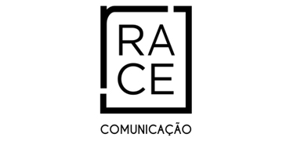
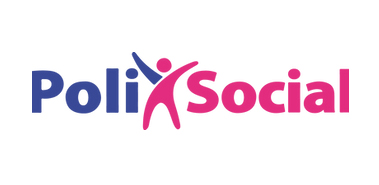
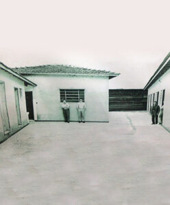
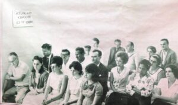
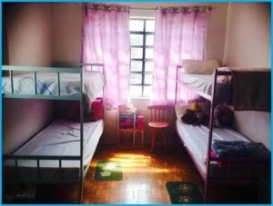
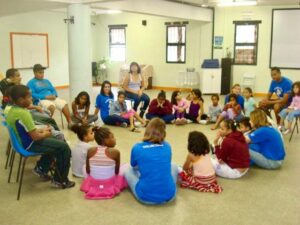
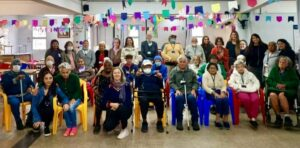

Sobre nós
Descubra como surgiu essa causa pela qual somos apaixonados!
Com 63 anos de atuação, o CACS se empenha hoje no aperfeiçoamento e ampliação do impacto social de seu trabalho.
Conheça nossa história e a nossa equipe!
» Nossa Missão
Garantir proteção social a pessoas em situação de vulnerabilidade e risco social e pessoal, contribuindo com ações afirmativas para resgatar a dignidade e fomentar a autonomia e o potencial transformador dessas pessoas.
» Nossa visão
Consolidar nossa atuação como organização social de referência, autossustentável com a participação da sociedade organizada e conduzida por uma gestão norteada pela solidariedade.
» Nossos valores
Ética, Transparência, Princípios Cristãos e Responsabilidade Social.
Apoiadores estratégicos


Nossa história

O CACS | Complexo Assistencial Cairbar Schutel, Organização da Sociedade Civil – (OSC) sem fins lucrativos, foi criado em 1963 movido pela busca de uma sociedade mais justa e com mais oportunidades, trabalhando para resgatar a dignidade e fomentar a autonomia de pessoas em situação de vulnerabilidade.
As primeiras instalações foram inauguradas em 1966, para receber 20 crianças. Novo prédio foi construído em 1979, quando passamos a atender 40 crianças, à época apenas meninos.
Em 1995 uma nova edificação foi inaugurada, ampliando a capacidade de atendimento para 60 crianças: 30 meninos e 30 meninas. Em 2008 o CACS dividiu seu atendimento em 3 casas modelo, com 20 crianças cada.
Cada casa modelo, denominada “Lar Cairbar Schutel” assistia 20 crianças e adolescentes de até 17 anos e 11 meses de idade; recebiam amparo integral – abrigo, alimentação e educação; assistência médica, odontológica e psicológica, além de lazer, dentro e fora da organização. Os jovens também realizavam cursos e estágios profissionalizantes quando atingiam a idade pertinente.
Buscando readequar e reestruturar o trabalho atendendo às mais urgentes demandas sociais, em julho de 2018 o CACS encerrou o serviço na modalidade SAICA, para desenvolver trabalhos voltados à educação e a capacitação de crianças e adolescentes, com maior amplitude e impacto social.
E novas frentes de trabalho se abrem em nosso país ainda pleno de graves carências. O CDI – Centro Dia para Idosos Dr. Ricardo, em funcionamento desde 01/04/2016, é dedicado à atenção diurna de até 30 pessoas idosas em vulnerabilidade social e com grau de dependência, que possuem limitações para realização das atividades de vida diária e convivem com suas famílias, mas não dispõem de atendimento de tempo integral no domicílio.




Cairbar Schutel
O Bandeirante do Espiritismo
Cairbar Schutel nasceu no Rio de Janeiro em 22 de setembro de 1868. Filho de Antero de Souza Schutel e de Rita Tavares Schutel, frequentou o Colégio D. Pedro II no Rio de Janeiro, à época capital federal. Iniciou sua trajetória profissional como aprendiz de farmácia ainda na adolescência, evoluindo rapidamente para prático de farmácia. No Rio, trabalhou em diversas farmácias e em razão de problemas de saúde, aos 17 anos teve que mudar-se da capital.
Veio para o Estado de São Paulo e escolheu como destino final a cidade de Araraquara, onde empregou-se na Farmácia Moura. Teve rápidas passagens pelas cidades de Piracicaba e Itápolis até estabelecer-se em definitivo na Vila do Senhor Bom Jesus das Palmeiras, atual município de Matão, em 1895.
Teve grande influência política nesta cidade. Em 1895, Matão era apenas um Distrito Policial, elevando-se a Distrito de Paz em 1897 e Município pertencente à comarca de Araraquara, em 1898. Cairbar, um dos fundadores da cidade, ocupou o cargo de Intendente – equivalente a Prefeito – de 28 de março a 7 de outubro de 1899 e de 18 de agosto a 15 de outubro de 1900, destacando-se como homem público interessado nos problemas das pessoas e nas causas primordiais que servissem de auxílio aos mais necessitados.
Católico por tradição, Cairbar abraçou o Espiritismo e dele se tornou um dos maiores divulgadores.
Fundou em 15 de julho de 1905 o Centro Espírita Amantes da Pobreza (atual Centro Espírita O Clarim); em 15 de agosto daquele ano lançou o jornal “O Clarim”. Além disso ministrava palestras doutrinárias nas cidades vizinhas e em programas radiofônicos na antiga PRD-4 de Araraquara.
Em 15 de fevereiro de 1925 fundou a “Revista Internacional de Espiritismo”, publicada até hoje.
É conhecido como “O Bandeirante do Espiritismo”, pelo sua motivação e luta constante pela divulgação espírita.
Cairbar Schutel retornou à pátria espiritual no dia 30 de janeiro de 1938, às 16h15 horas. Na lápide onde seu corpo foi sepultado está gravada a célebre frase: “Vivi, vivo e viverei, porque sou imortal”.
Obras Literárias:
- Espiritismo e protestantismo – setembro de 1944
- Histeria e fenômenos psíquicos – dezembro de 1911
- O Diabo e a igreja – dezembro de 1914
- Espiritismo para crianças – 1918
- Interpretação sintética do apocalipse – 1918
- Cartas a esmo – 1918
- Médiuns e mediunidades – agosto de 1923
- Gênese da Alma – setembro de 1924
- Espiritismo e materialismo – dezembro de 1925
- Fatos espíritas e as forças X... – maio de 1926
- Parábolas e ensinos de Jesus – janeiro de 1928
- O Espírito do cristianismo – fevereiro de 1930
- A Vida no outro mundo – outubro de 1932
- Vida e atos dos apóstolos – fevereiro de 1933
- Preces espíritas – 1936
- Conferências radiofônicas – setembro de 1937
Equipe
Conselho Deliberativo
Alice Camargo Pitcher Vasconcelos
Conselheira
Christianne Giannelli Lobato
Conselheira
Luiz Eduardo Almeida Vieira Barbosa
Conselheiro
Marco Antônio Honorato de Oliveira
Conselheiro
Vera Lúcia Simões Vieira Barbosa
Conselheira
Diretoria Executiva
Gilberto Magalhães Sarmento Afonso
PRESIDENTE
Abel Glaser
Vice-Presidente
Haércio Suguimoto
Secretário Geral
Náila Giannelli
1ª Secretária
Paulo Roberto Gil Telesi
1º Tesoureiro
José Geraldo Vasconcelos de Moura
2º Tesoureiro
Conselho Fiscal
Ailton Ricardo Estevam
Efetivo
Arley Lobato Junior
Efetivo
Iseralda Trevizan Glaser
Efetivo
Reinaldo Corrêa
Suplente
Rodrigo Sousa Madeira Campos
Suplente
Selma Segato Magalhães Sarmento Afonso
Suplente
A Equipe
O trabalho no CACS é realizado por colaboradores e voluntários. Conheça a nossa equipe!
Ailton Ricardo Estevam
Superintendente
Édila Kiarelli Lima
Gerente administrativo
Maria Eduarda da Silva
Auxiliar administrativo
Equipe técnica do Centro Dia para Idosos Dr. Ricardo
Grazielly de Siqueira Basso
Gerente de serviço
Claudinei Alves de Souza
Psicólogo
Lívia de Almeida Coelho Gimenes
Nutricionista
Daniel Matos
Assistente social
Caroline Gomez Cerqueira
Enfermeira
Ana Luísa Brandão Corrêa dos Santos
Gerontóloga